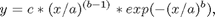
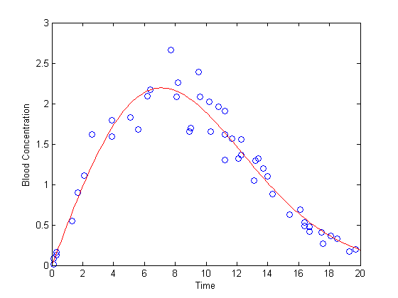
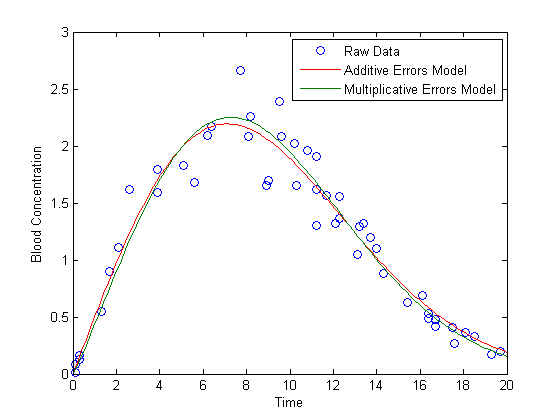
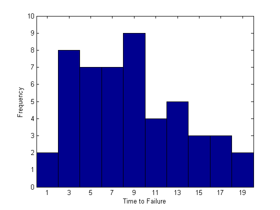
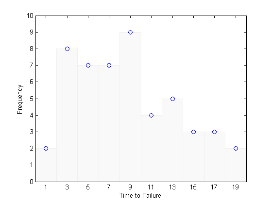
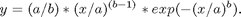
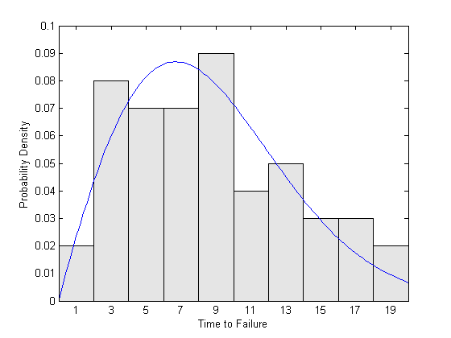

曲線近似と分布近似
「データがあり、ワイブル分布で近似したい。ワイブル曲線近似を行うにはどの MATLAB® 関数を使用すればよいだろうか。」
この問いに答える前に、どのようなデータ解析が本当に適切なのかを理解する必要があります。曲線近似と確率分布でデータをモデル化することの違いについて調べてみましょう。
目次
曲線近似
血液サンプル中のある化合物の濃度を測定する実験について検討します。このサンプルは、複数の被験者に実験的治療を施した後に時期を変えて採取したものです。
time = [ 0.1 0.1 0.3 0.3 1.3 1.7 2.1 2.6 3.9 3.9 ... 5.1 5.6 6.2 6.4 7.7 8.1 8.2 8.9 9.0 9.5 ... 9.6 10.2 10.3 10.8 11.2 11.2 11.2 11.7 12.1 12.3 ... 12.3 13.1 13.2 13.4 13.7 14.0 14.3 15.4 16.1 16.1 ... 16.4 16.4 16.7 16.7 17.5 17.6 18.1 18.5 19.3 19.7]; conc = [0.01 0.08 0.13 0.16 0.55 0.90 1.11 1.62 1.79 1.59 ... 1.83 1.68 2.09 2.17 2.66 2.08 2.26 1.65 1.70 2.39 ... 2.08 2.02 1.65 1.96 1.91 1.30 1.62 1.57 1.32 1.56 ... 1.36 1.05 1.29 1.32 1.20 1.10 0.88 0.63 0.69 0.69 ... 0.49 0.53 0.42 0.48 0.41 0.27 0.36 0.33 0.17 0.20]; plot(time,conc,'o'); xlabel('Time'); ylabel('Blood Concentration');

1 つの応答変数 "血中濃度 (blood concentration)" と 1 つの予測変数 "摂取後時間 (ime after ingestion)" があることに注意してください。予測データは誤差がほとんどまたはまったくなく測定される一方で、応答データは実験誤差による影響を受けるものとします。このようなデータ解析の主目的は、応答変数を予測するモデルを定義することが一般的です。言い換えると、傾向線つまり x (時間) の関数としての y (血中濃度) の平均応答の形を描こうとしているのです。これは、二変量データに関する曲線近似です。
血流への吸収と分解の理論モデルに基づいて、たとえば、濃度が時間の関数としてワイブル曲線に従うはずだと判断します。ワイブル曲線は以下の形式になります。

3 つのパラメーターで定義されます。最初のパラメーターは曲線を横軸に合わせて調整し、2 番目のパラメーターは曲線の形状を規定し、3 番目のパラメーターは曲線を縦軸に合わせて調整します。この曲線の形状が、ワイブル確率密度関数の形状とほぼ同じでありながら、パラメーター c を含んでいるために密度ではないことに注意してください。このパラメーター c は、データに合わせて曲線の高さを調整するために必要です。
非線形最小二乗法を使用して、ワイブル モデルで近似することができます。
modelFun = @(p,x) p(3) .* (x ./ p(1)).^(p(2)-1) .* exp(-(x ./ p(1)).^p(2)); startingVals = [10 2 5]; coefEsts = nlinfit(time, conc, modelFun, startingVals); xgrid = linspace(0,20,100); line(xgrid, modelFun(coefEsts, xgrid), 'Color','r');
この散布図は、測定誤差の分散が等しくなく、むしろ分散が平均曲線の高さに比例することを示唆しています。この問題に対処する 1 つの方法は、重み付き最小二乗法を使用することです。ただし、この近似法によって別の問題が発生する可能性があります。
現在使用しているワイブル曲線は、他の同様のモデル (ガウス曲線、ガンマ曲線、指数曲線など) と同様に、応答変数が非負であるときのモデルとして使用されるのが一般的です。実験誤差が加法的であり、かつ分散が一定しており対称分布からは独立した線と見なすことができるときには、通常の最小二乗法による曲線近似が適切です。ただし、この条件を満たすことができる場合には、ここで示す例では負の血中濃度を測定することもできてしまいますが、今回の場合は適用することはできません。
対数スケール上で対称的な乗法的誤差を仮定する方が現実的かもしれません。この仮定の下で濃度と元のワイブル曲線自体の両方を対数化することにより、データをワイブル曲線で近似することができます。つまり、非線形最小二乗法を使用して、曲線で近似することができます。

coefEsts2 = nlinfit(time, log(conc), @(p,x)log(modelFun(p,x)), startingVals); line(xgrid, modelFun(coefEsts2, xgrid), 'Color',[0 .5 0]); legend({'Raw Data' 'Additive Errors Model' 'Multiplicative Errors Model'});
このモデル近似では、精度を推定する必要があり、モデルの近似具合を確認する必要があります。たとえば、対数スケール上に残差をプロットし、乗法的誤差の分散が一定であるという仮定が正しかったのかどうかを確認する必要があります。簡単にするため、ここでは手を付けないでおきます。
この例では、乗法的誤差モデルを使用しても、モデルの予測値間に差はほとんど認められませんでした。ただし、結果がいつでもこうなるとは限りません。これが問題となる例については、Pitfalls in Fitting Nonlinear Models by Transforming to Linearity のデモで説明されています。
曲線近似のための関数
MATLAB といくつかのツールボックスには、曲線近似に使用できる関数があります。Statistics Toolbox™ には、非線形最小二乗曲線近似用の関数 nlinfit、および一般化線形モデルでの近似用の関数 glmfit があります。Curve Fitting Toolbox™ には、曲線近似での作業の多くを単純化するグラフィカル ツールとコマンド ライン ツールがあります。たとえば、多くのモデルのために開始係数値を自動的に選択するツールや堅牢でノンパラメトリックな近似法を提供するツールなどです。多くの複雑な曲線近似解析は、係数に制約があるモデルも含めて、Optimization Toolbox™ に用意されている関数を使用して実行することができます。MATLAB 関数である polyfit は、多項式モデルを近似し、関数 fminsearch を他の多くの曲線近似に使用することができます。
分布近似
ここで、50 個の電気部品が故障するまでの時間を測定した実験について検討しましょう。
life = [ 6.2 16.1 16.3 19.0 12.2 8.1 8.8 5.9 7.3 8.2 ... 16.1 12.8 9.8 11.3 5.1 10.8 6.7 1.2 8.3 2.3 ... 4.3 2.9 14.8 4.6 3.1 13.6 14.5 5.2 5.7 6.5 ... 5.3 6.4 3.5 11.4 9.3 12.4 18.3 15.9 4.0 10.4 ... 8.7 3.0 12.1 3.9 6.5 3.4 8.5 0.9 9.9 7.9];
測定したのは 1 つの変数、つまり部品の寿命だけであることに注意してください。応答変数と予測変数という考えはありません。むしろ、各観測は 1 つの測定値だけで構成されています。このようなデータを解析する目的は、他の変数の値が与えられたときにある新しい部品の寿命を予測することではなく、取り得る寿命値の完全な分布を描くことです。これは、一変量データに関する分布近似です。
このデータを可視化するための簡単な方法の 1 つは、ヒストグラムを作成することです。
binWidth = 2; binCtrs = 1:binWidth:19; hist(life,binCtrs); xlabel('Time to Failure'); ylabel('Frequency'); ylim([0 10]);
このヒストグラムを (x,y) 値の集合と見なすことは、魅力的な考え方かもしれません。ただし、各 x はビンの中心、各 y はビンの高さとします。
h = get(gca,'child'); set(h,'FaceColor',[.98 .98 .98],'EdgeColor',[.94 .94 .94]); counts = hist(life,binCtrs); hold on plot(binCtrs,counts,'o'); hold off
そして、これらの点を通る曲線で近似して、データをモデル化しようとするかもしれません。寿命データがワイブル分布に従うことはよくあることなので、上の曲線近似の例のワイブル曲線を使用することすら考えるかもしれません。
coefEsts = nlinfit(binCtrs,counts,modelFun,startingVals);
しかし、ヒストグラムを曲線で近似することには落とし穴がいくつかあり、この単純な近似は適切ではありません。まず、ビン数は非負であり、これは測定誤差が対称的にはなり得ないことを暗に示しています。さらに、分布の両裾でのビン数のばらつきは、中央部とは異なっています。ビン数には一定の総和もあります。これは、ビン数が独立した測定値ではないことを暗に示しています。これらはすべて、最小二乗近似の基本的な仮定に反しています。
ヒストグラムが調整されたバージョンの経験的確率密度関数 (PDF) を本当に表していることを認識することも重要です。ワイブル曲線でバーの高さを近似する場合、曲線を適切に正規化する必要があります。
これらの問題に対処するには、より適切な最小二乗近似法を使用するしかありません。しかし、別の懸念も生じます。それは、連続データの場合、生データではなくヒストグラムのビン数に基づいてモデルで近似すると、情報が失われてしまうことです。さらに、ヒストグラムのバーの高さは、ビンのエッジと幅の選択に大きく依存します。分布でこのように近似することはできますが、通常は最適な方法ではありません。
多くのパラメトリック分布の場合、パラメーターの推定には最尤法の方がはるかに優れています。最尤法なら上で述べた問題はいっさい発生しません。さらに、所定のデータ量に対する結果が可能な限り正確であるという意味で、最も効率的な方法であることがよくあります。
たとえば、関数 wblfit では最尤法を使用してデータをワイブル分布で近似します。ワイブル PDF は以下の形式を取ります。

これが上の曲線近似で使用されたワイブル曲線の形式とほとんど同じであることに注意してください。ただし、垂直方向の高さを独自に調整するための独立したパラメーターはありません。この関数は PDF なので、積分すると常に 1 になります。
データをワイブル分布で近似してから、データのヒストグラムをプロット (積分すると 1 になるように調整)し、近似された PDF を重ね合わせます。
paramEsts = wblfit(life); n = length(life); prob = counts / (n * binWidth); bar(binCtrs,prob,'hist'); h = get(gca,'child'); set(h,'FaceColor',[.9 .9 .9]); xlabel('Time to Failure'); ylabel('Probability Density'); ylim([0 0.1]); xgrid = linspace(0,20,100); pdfEst = wblpdf(xgrid,paramEsts(1),paramEsts(2)); line(xgrid,pdfEst)
最尤法は、ある意味で、ヒストグラムに最もよく一致するワイブル PDF を見つける手段と考えることができます。ただしこれは、PDF とバーの高さとの差の二乗和を最小化することによって達成されるわけではありません。
前述の曲線近似と同様に、このモデル近似では、精度を推定する必要があり、モデルの近似具合を確認する必要があります。簡単にするため、ここでは手を付けないでおきます。
分布近似のための関数
Statistics Toolbox には、最尤法を使用して多くのさまざまなパラメトリック分布で近似を行うための関数 wblfit があります。また、関数 mle を使用して、専用の近似関数が明示的に用意されていないカスタム分布で近似することができます。関数 ksdensity は、ノンパラメトリック分布モデルでデータを近似します。Statistics Toolbox には、GUI の dfittool もあります。このツールは、分布近似での作業の多くを単純化します。たとえば、さまざまな可視化や診断プロットの生成です。多くの複雑な分布による近似は、パラメーターに制約がある分布も含めて、Optimization Toolbox に用意されている関数を使用して実行することができます。最後になりますが、MATLAB 関数の fminsearch を使用して、多くの最尤法分布近似を行うことができます。
曲線でヒストグラムを近似することは、基本的には最適ではありませんが、特定の分布近似では特殊なケースの曲線近似を適用するための賢明な方法がいくつかあります。ある 1 つの方法を PDF ではなく累積確率 (CDF) スケール上で適用する例については、累積確率を使用する一変量分布での近似のデモで説明されています。
まとめ
調整されたバージョンの一般的な確率密度関数であるモデル (ワイブル、ガウス、gamma、指数など) で曲線近似を行うことは、珍しくありません。これらのケースでは曲線近似と分布近似が混同されがちですが、この 2 つは非常に異なるデータ解析法です。
- 曲線近似には、応答変数の傾向または平均を 2 番目の予測変数の関数としてモデル化することが関係しています。このモデルには通常は、曲線の高さを調整するパラメーターが含まれていなければならず、また切片の項が含まれることもあります。データにとって適切なプロットは x-y 散布図です。
- 分布近似には、単一変数の確率分布をモデル化することが関係しています。このモデルは、正規化された確率密度関数です。データにとって適切なプロットはヒストグラムです。